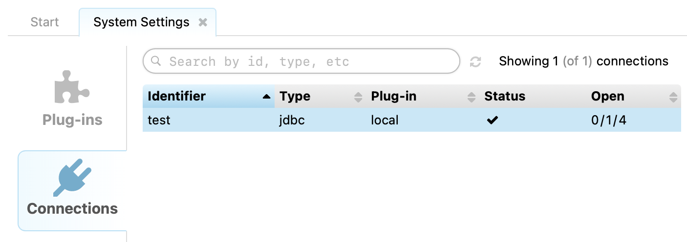

2. Installing & Connecting
2.1 System Requirements
The standard RapidContext download package comes bundled with most of its dependencies. Additional launchers for Docker and Mac OS X are also available separately.
-
Web Browser — All modern browsers work, with
full support for:
- Apple Safari 13+
- Google Chrome 76+
- Microsoft Edge 79+
- Mozilla Firefox 71+
-
Server Environment — Only needed on the RapidContext
server (unless Docker is used).
- Java Runtime (JRE) 21+
- Unzip or similar utility
- Bash shell or cmd.exe on Windows
2.2 Docker Images
The easiest way to run RapidContext is with a pre-built Docker image. This only requires a Docker server and supports standard port-mapping and local data volume arguments:
$> docker run \
-p 8080:80
-v local-data:/opt/local \
ghcr.io/baraverkstad/rapidcontext:v2025.06
The command above starts a new server on
localhost:8080 and creates a default
admin user on the first run (unless other users are found).
Notice
A new RapidContext server can be accessed with the following login:
| Login: | admin |
|---|---|
| Password: | blank (anything is accepted) |
It is important to change the password for the default admin user before allowing access to the system.
The Docker image is based on Alpine Linux for minimal size. It is
multi-architecture and supports both linux/amd64 and
linux/arm64. The
list of available versions
shows the image tags available. Note that latest references
the current development version.
The recommended way to run RapidContext in Docker is to build your own image. This can either be built from scratch, or reuse the default image to install additional software, etc:
FROM ghcr.io/baraverkstad/rapidcontext:v... # Update packages & install extras RUN apk --no-cache upgrade && \ apk --no-cache add ... # Diagnostics HEALTHCHECK --timeout=5s CMD \ wget -q --spider http://localhost/rapidcontext/status
The RapidContext Dockerfile can serve as a good reference for building an image from scratch.
2.3 Server Installation
RapidContext can be installed either as a stand-alone server (recommended) or inside a Java Servlet container, such as Jetty or Tomcat. To install and start the stand-alone server, follow the steps below:
| Linux, Mac OS & Unix | Windows |
|---|---|
| 1. #> cd /opt | 1. Go to Program Files folder |
| 2. #> unzip rapidcontext-XYZ.zip | 2. Unpack rapidcontext-XYZ.zip |
| 3. #> cd rapidcontext-XYZ | 3. Open directory rapidcontext-XYZ\bin |
| 4. #> bin/rapidcontext | 4. Double-click rapidcontext.bat |
When run from the command-line, RapidContext supports different modes and provides a number of options:
$> bin/rapidcontext --help
Usage: [1] rapidcontext [--app] [<options>]
[2] rapidcontext --server [<options>]
[3] rapidcontext [--script] [<options>] [<procedure> [<arg1> ...]]
Alternative [1] is assumed when no procedure is specified.
Alternative [3] is assumed when a procedure is specified.
Options:
--app Launch in interactive application mode.
--server Launch in server mode.
--script Launch in script execution mode.
-h,--help Displays this help message,
-l,--local <dir> Use a specified local app directory.
--properties <file> Load system properties file at startup.
-p,--port <number> Use a specified port number (non-script mode).
-d,--delay <secs> Add a delay after each command (script mode).
-t,--trace Print detailed execution trace (script mode).
-u,--user <name> Authenticate as a another user (script mode).
--stdin Read commands from stdin (script mode).
-f,--file <file> Read commands from a file (script mode).
To install RapidContext in a Java servlet container, use the file rapidcontext.war inside the ZIP distribution and follow the deployment instructions for your server.
The RapidContext server is also available as a convenient RapidContext.app launcher application for Mac OS X. Once started, it shows a simple server control panel as below:

2.4 Plug-in Installation
Plug-ins are installed or updated by using the built-in Settings app. The steps below explain how to install or update a plug-in:
- Launch or go to the Settings app
- Choose the
Plug-ins
tab - Click the
Install Plug-in
button near the top right corner (see screenshot)
- Choose the plug-in file and wait for the upload to complete
- The plug-in is now installed and activated
Notice
After installing or unloading some plug-ins, the client or server must be restarted for the plug-in loading to have effect:
- Client Restarts: If the plug-in adds or modifies an app, the web browser should be reloaded. Use F5 or Ctrl-R to force a page reload in your browser.
- Server Restarts: When loading or unloading plug-ins containing Java code or JAR libraries, a full server restart is sometimes needed due to issues with the Java virtual machine. The Settings app provides a warning in those situations. Make sure that the java process is fully terminated before restarting the service.
2.5 Plug-in Activation & Deactivation
Plug-ins can both be loaded and unloaded in the built-in Settings app. The steps below explain how to do it.
- Launch or go to the Settings app
- Choose the
Plug-ins
tab - Select the plug-in to activate or deactivate in the table
- Press the corresponding
Load
orUnload
button - The plug-in is now activated or deactivated
2.6 Plug-in Removal
Normally, it is not necessary to completely remove a plug-in from the server. Leaving it in unloaded status ensures that it has no effect on the system. Nevertheless, a plug-in can be completely removed by the following steps:
- Launch or go to the Settings app
- Choose the
Plug-ins
tab - Ensure that the plug-in is currently not loaded
- On the server — Go to the plugin/ directory
- On the server — Remove the [plugin].zip file
- Press the
Restart
button in the Settings app - Verify that the plug-in is no longer in the list of plug-ins
2.7 Connections
Connections to external systems can be created and modified in the built-in Settings app. The steps below explain how to do it:
- Launch or go to the Settings app
- Choose the
Connections
tab - Select the connection to modify (if appropriate, see screenshot)

- Press either the
Edit
or theAdd connection
button - The connection editing dialog is shown (see screenshot)

- Select the appropriate type and edit the details
- Press
Save
to save the changes
A number of things should be noted regarding connections and connection editing:
- Advanced Settings — The advanced settings for a
connection becomes visible when checking the
Show all parameters
checkbox in the edit dialog. - Connection Channels — Each connection may open one
or more connection channels (i.e. a TCP or UDP connection) to the
external service. The number of currently open and used channels is shown
in the
Connection List
view. - Connection Pooling — Connection channels are often
not closed immediately after use, but instead pooled for reuse (depending
on connection type). This improves performance and reduces resource
usage. The size of the pool can be controlled with the
Max Open
andMax Idle Secs
parameters. - Connection Types — Connections may behave somewhat differently depending on the connection type. See the plug-in documentation for details: JDBC Plug-In, HTTP Plug-In, and Command-line Plug-In.
- Transactions — Some connection types support transactions, in which case each call to the server will be encapsulated in a new transaction. The same transaction may span several connections.
2.8 Environments
An environment is used to signal the RapidContext server location to the user. The environment name is displayed at the top right corner of the standard user interface, along with the user name. Environments are primarily useful when several RapidContext servers are in use.
There is currently no user interface for editing or creating environments, so they must be manually added to the plugin/local/environment/ directory (or the environment/ directory in your plug-in). The file name should follow normal storage rules, i.e. [identifier].properties. See below for an example environment file.
# General properties
id = EXAMPLE
type = environment
description = The example environment
connections = EXAMPLE/
The connections property is used as a prefix when locating connections. I.e. all connection identifiers in the environment should be named [prefix]/[identifier], but only the identifier part should be specified on usage (in procedures and similar).
For example, if the environment has connections = PROD/, then a connection stored as connection/PROD/database would be referenced in procedures simply as database. This allows the same procedure definitions to work across different environments by changing only the environment configuration.
Notice
A RapidContext server may currently only have a single environment loaded (although multiple connections are supported). This environment is used for all users, apps and procedures on the server. If several environments are required, separate RapidContext server instances should be installed.